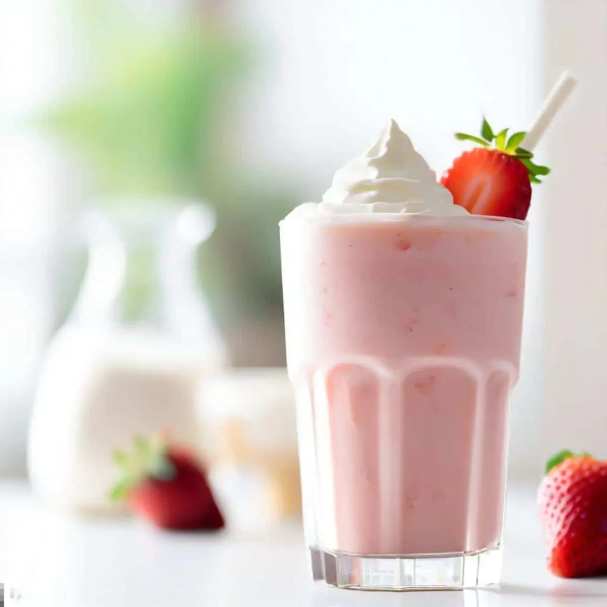

Strawberry Milk Shake

Takes just a few minutes and tastes delicious!
Ingredients:
- 1 Cup fresh or frozen strawberries
- 2 Scoops vanilla ice cream
- ½ Cup milk (any type)
- 1 Teaspoon vanilla extract (optional)
- Whipped cream (optional, for topping)
Preparing:
- Blend the ingredients in a blender, combine the strawberries, vanilla ice cream, milk, and vanilla extract (if using).
- Blend until smooth. Blend until the mixture is creamy and smooth.
- Pour into a glass and top with whipped cream if desired.
Enjoy your refreshing strawberry milkshake!